GEC concrete lamp posts
This page is about GEC concrete lamp posts. Click here for GEC metal lamp posts and lamps
Click here to go to the Beno lamp post guide homepage
1950s square Swan Necks
These are very rare and awesome. GEC was the only company to make swan necks that are square the whole way from the base to throughout the swan neck. These are located near orpington (South east London). The lamps were replaced in the 80s.
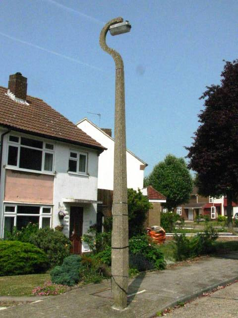
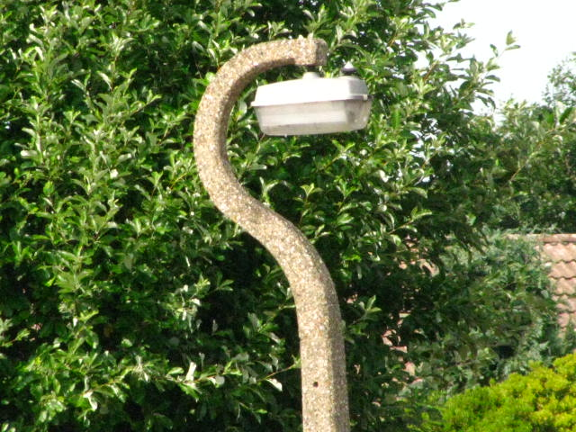
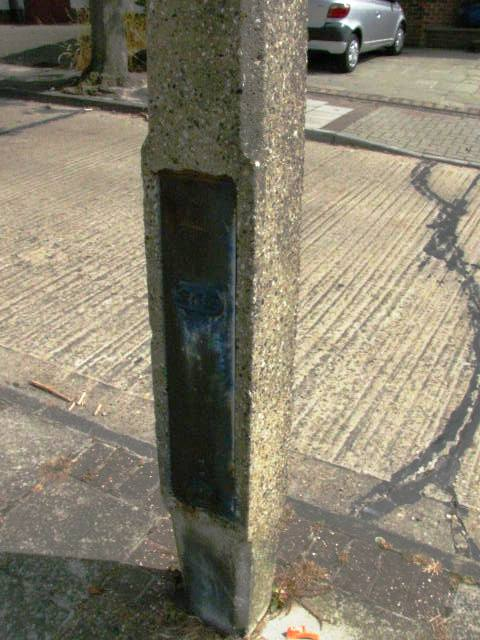
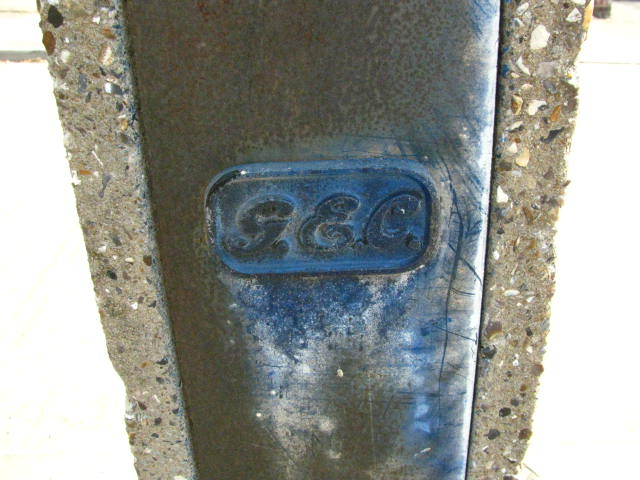
1950s octagon Swan Necks
These are very rare and awesome. (lamp replaced in the 80s).
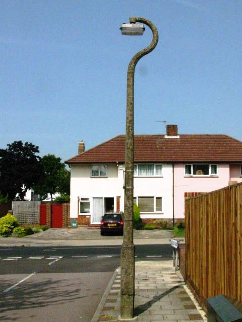
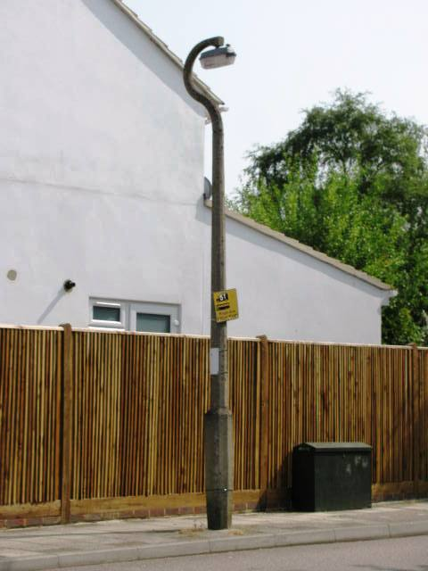
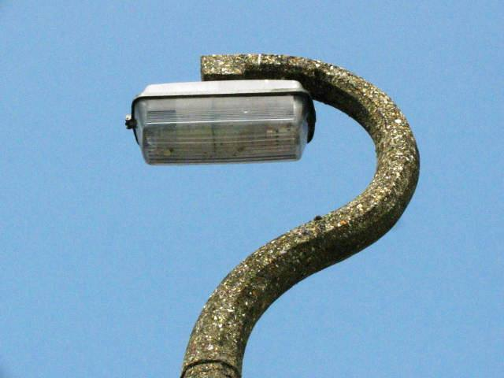
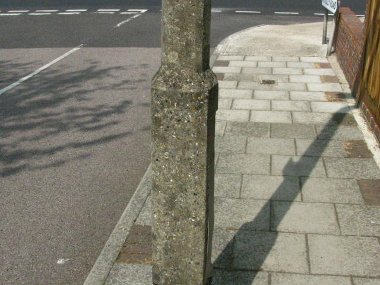
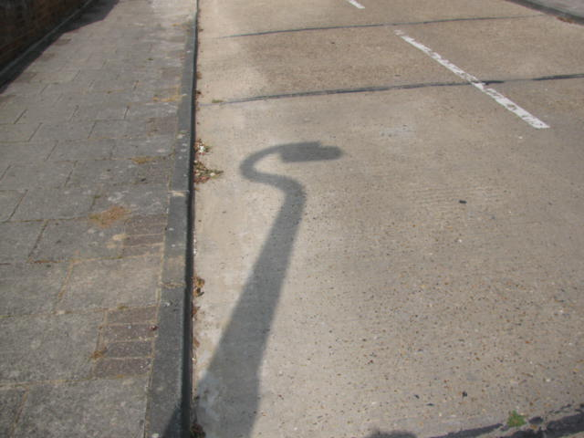
1950s - 60s square concrete lamp posts
These have a curved bracket. They are square the entire way from base to throughout the bracket.
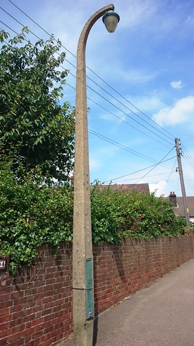
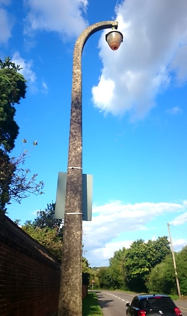
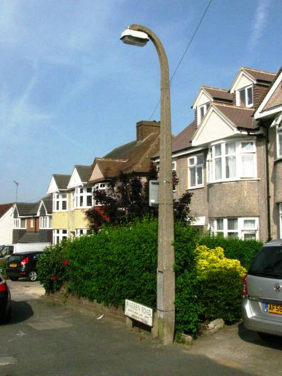
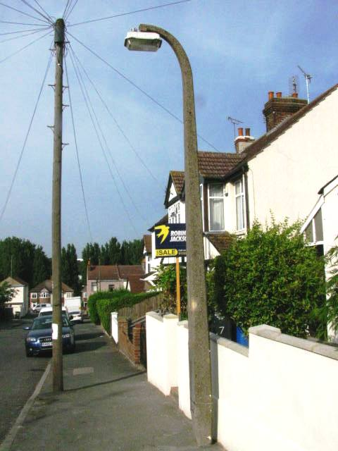
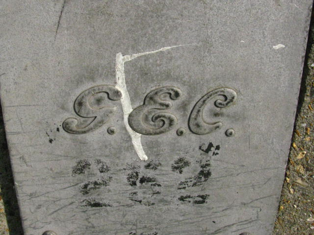
These ones in Brompton (Medway) have been modernized.
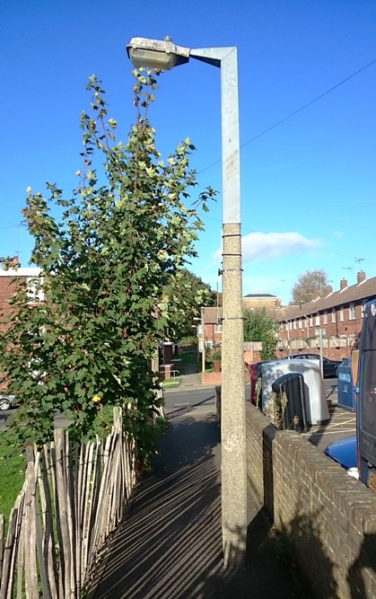
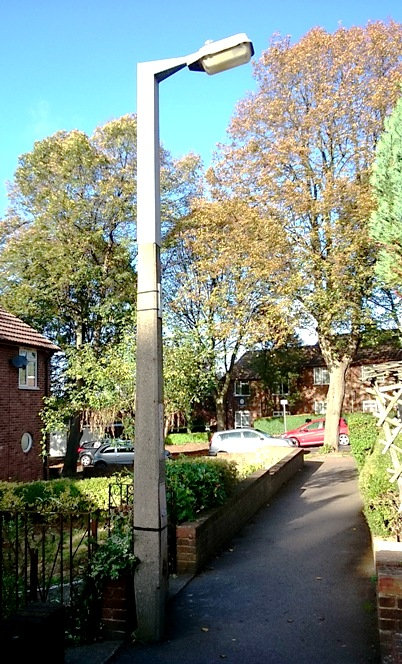
1950s - 60s Major road
These are rare.
There is one in a car park on Portland (near Weymouth). Sadly the lamp is replaced with a 90s Phillips.
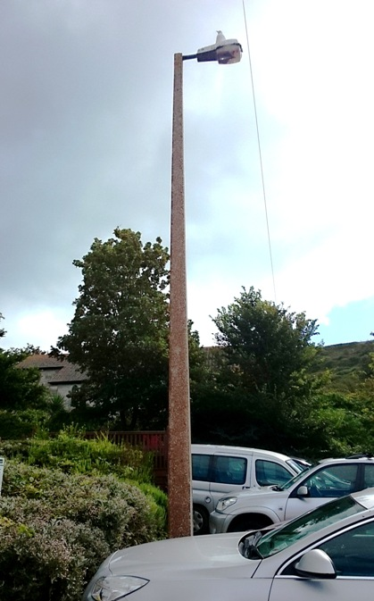
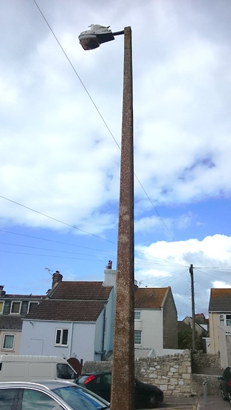
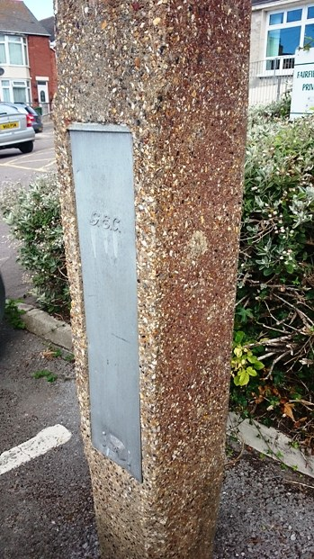
These ones are at Peter Port on Guernsey.
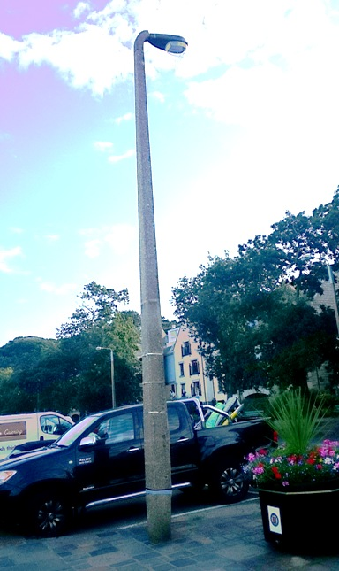
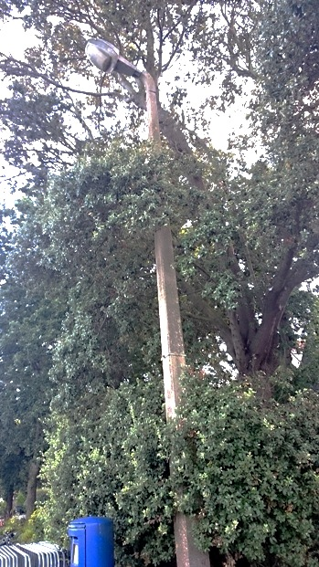
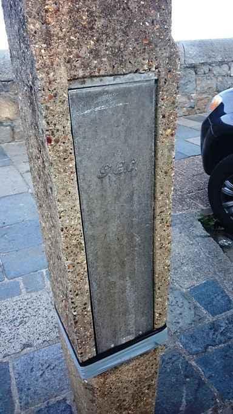
This one is also at Peter Port on Guernsey. It has been modernozed in the 80s.
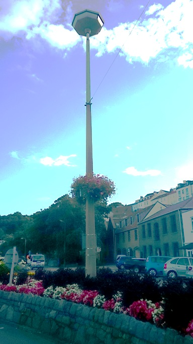
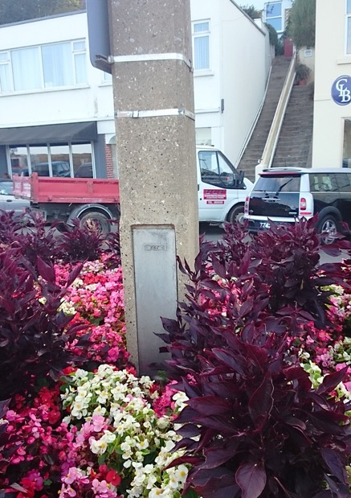
1960s slim concrete lamp posts
These are designed to take up only a small amount of space next to a wall. This one has sadly been modernized.
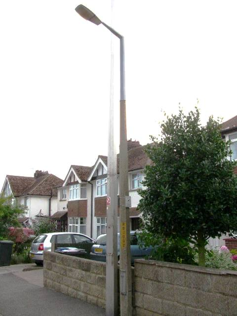
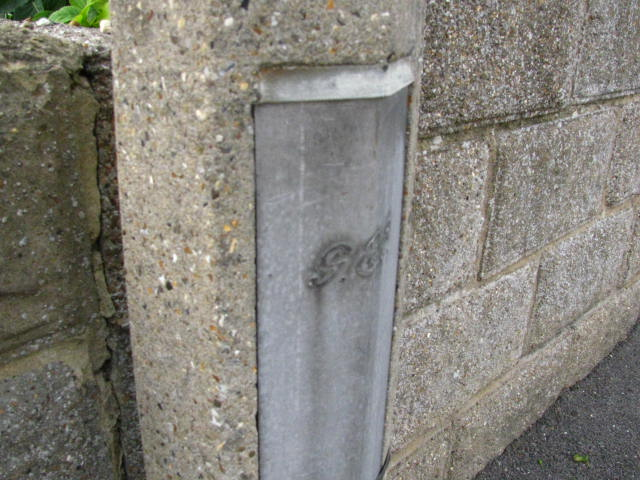
Click here to go to the Beno lamp post guide homepage